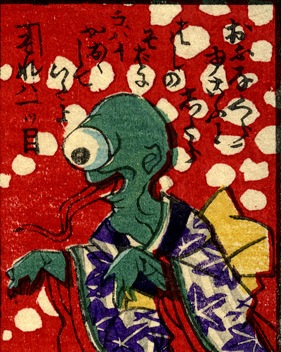

一つ目；ヒトツメ，舌；シタ，女；オンナ

女性の着物をきた一つ目の化物。長い舌を出して両腕を前に垂らしている。詞書には「御船蔵に行こうとしたら、橋のそばに怖い顔をしていたよ。それは一つ目」とある。
著作者：芳幾近二／出典：親書誌：U426_nichibunken_0229：新作おばけ野噺；シンサクオバケノバナシ／日付：2010／資源識別子：U426_nichibunken_0229_0003_0000
Copyright (c)2010- International Research Center for Japanese Studies, Kyoto, Japan. All rights reserved.